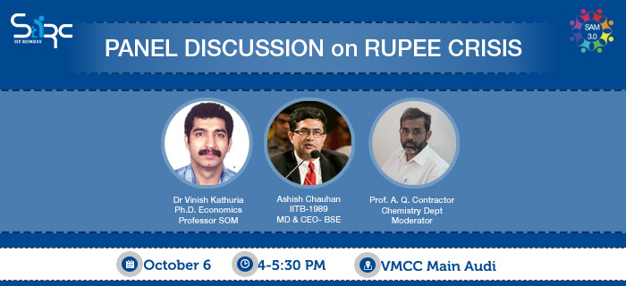
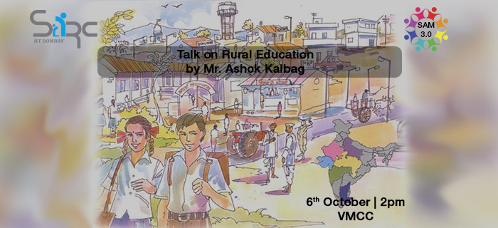

- 


- 
About Student Alumni Meet
SAM, initiated last year as a platform to facilitate student-alumni interactions and to help students avail the numerous benefits that IITB's pool of experienced alumni can provide, the event has already gained significant popularity with a collective attendance of more than 500 alumni interacting with 5000+ students.
Student Alumni Meet (SAM) scheduled in the first weekend of October (Oct 5 - 6) is the flagship event of SARC. More
What Alumni has to say
SAM 3.0on 5-6 october 2013
Student Alumni Meet (SAM) scheduled in the first weekend of October (Oct 5 - 6) is the flagship event of SARC
Have a look at SAM 2.0
We invite alumni from different fields to come forward and give interactive buddy talks, participate in panel debates and indulge themselves in other events.
Due to its rising popularity, it is already on its way of becoming the most awaited event of the year.
Registrations sam events
- SAM Eventsregistration details
- Sports events Scheduleregistration details
- SARCasmFor more details
Contact Uscontact details
Dean ACR
Main building,
Main Gate Road,
Indian Institute of Technology (IIT), Bombay, Powai
Mumbai - 400 076
Maharashtra